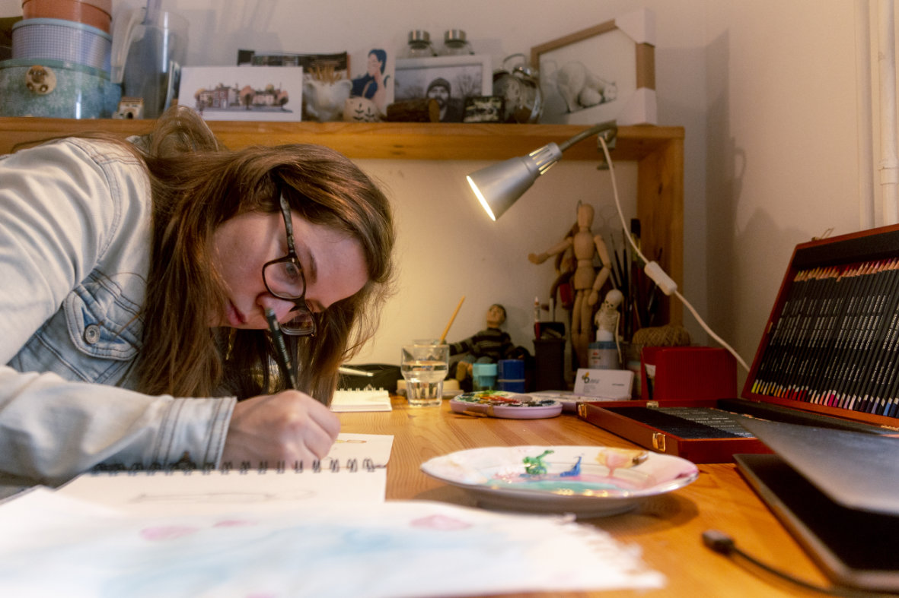

Sem Eva Margon Štanta, ustvarjalka na področju ilustracije, oblikovanja in animacije. Magisterij iz ilustracije sem zaključila na ALUO v Ljubljani leta 2019, del študija pa opravila na Akademiji Minerva v Groningenu na Nizozemskem. Poleg knjižne ilustracije se veliko ukvarjam z znanstveno, poljudnoznanstveno in naravoslovno ilustracijo, komplementarno pa v svojem grafičnem ateljeju raziskujem in se poigravam z redukcijskim linorezom. Kadar je priložnost, ilustracije zavijem v serijo animiranih sličic. Svoje projekte najraje prepletam z živalskimi in rastlinskimi motivi.
Gozdarski inštitut Slovenije · Prirodoslovni muzej Slovenije · Celjska Mohorjeva družba · Goriška knjižnica Franceta Bevka · Pošta Slovenije · Galerija Velenje · Lokarjeva galerija · Zavod Dagiba · Zavod CCC · Zavod Divja misel · Podobarna · Galerija TIR